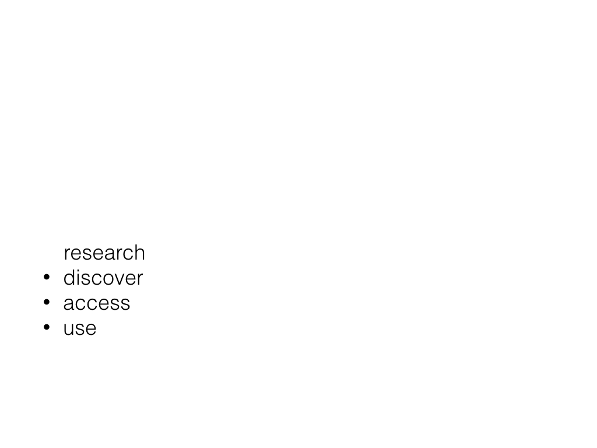
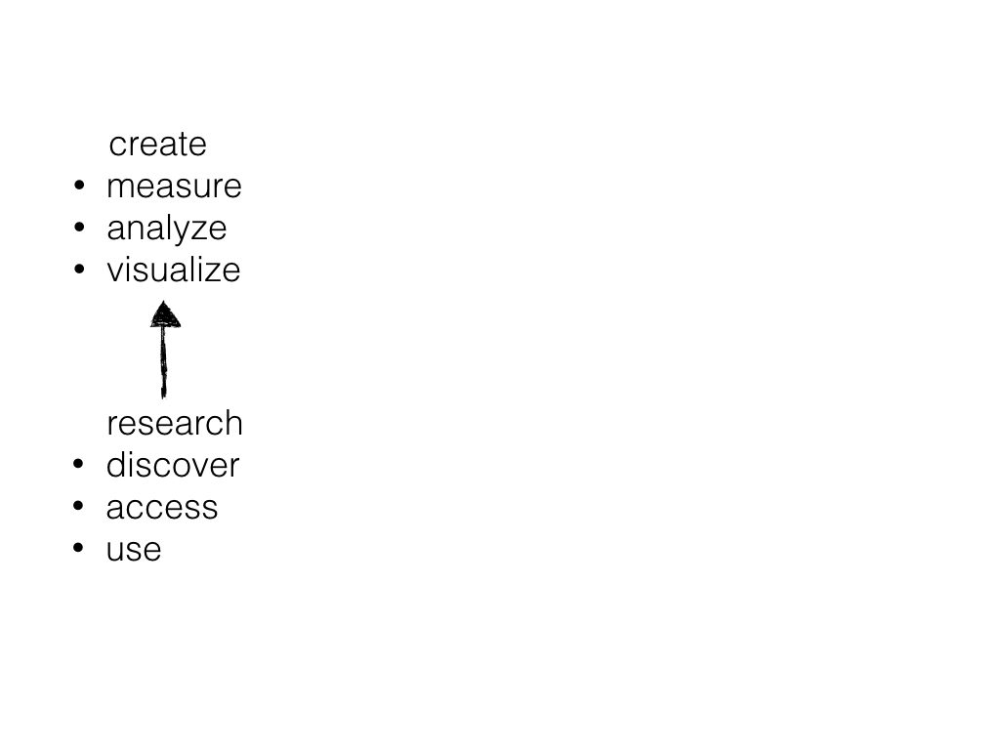
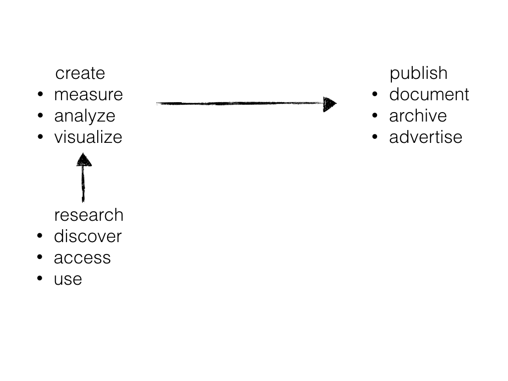
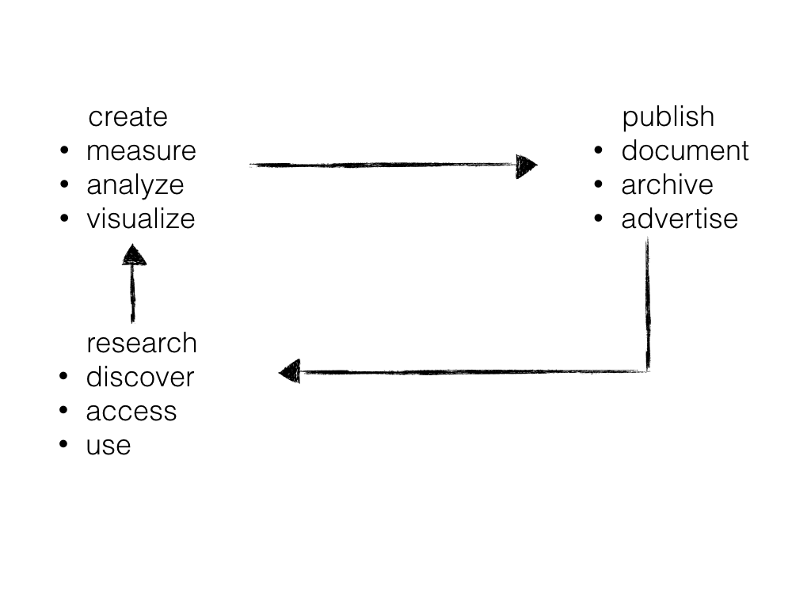
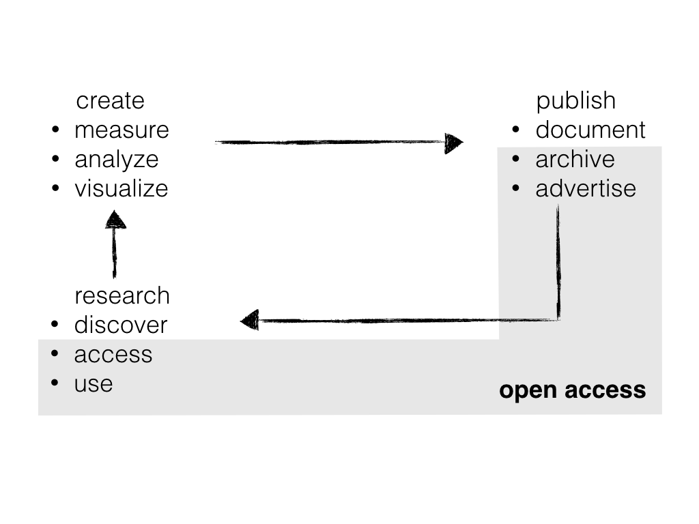
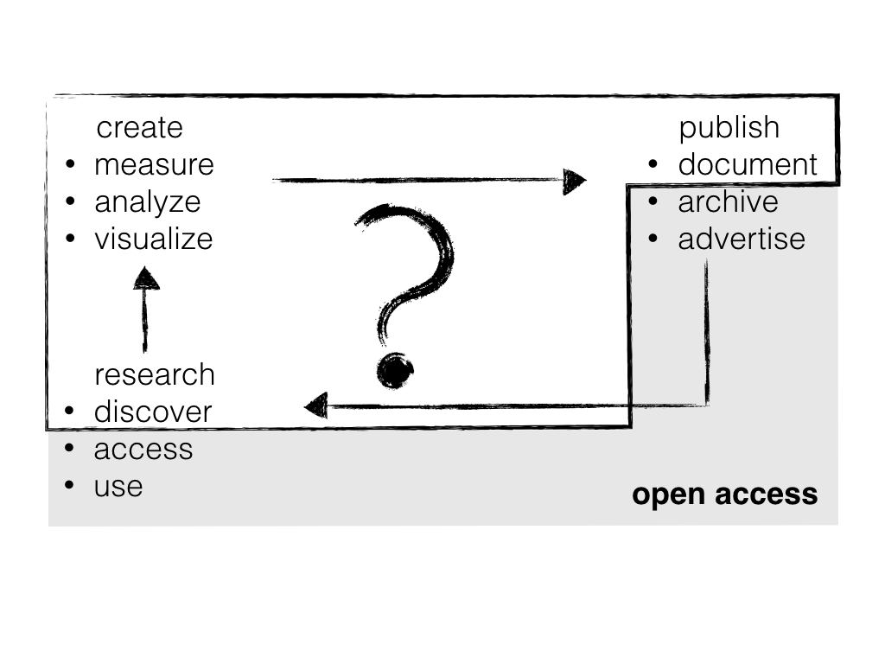
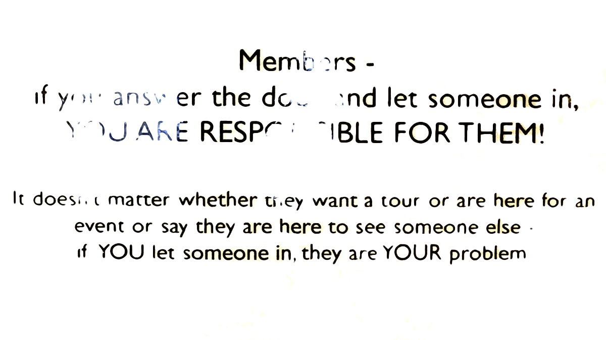

name: intro class: center, middle # A lawyer, a scientist, and a kid walk into a makerspace ## only one makes something iKNOW Conference, TU Graz • October 2015 Puneet Kishor Released under a [CC0 Public Domain Dedication](https://creativecommons.org/publicdomain/zero/1.0/). <div class="slidefooter"> <a href="/A-lawyer-a-scientist-and-a-kid"><img src="/_lib/img/PunkishEidesisOrg-small.gif"></a> <a rel="license" href="https://creativecommons.org/publicdomain/zero/1.0/"><img src="/_lib/img/zero.png" alt="CC0" width="30" height="30"></a> <div class="navlinks"> <a href="javascript:slideshow.gotoPreviousSlide()">prev</a> <a href="javascript:slideshow.gotoNextSlide()">next</a> </div> </div> --- layout: true <div class="slidefooter"> <a href="/A-lawyer-a-scientist-and-a-kid"><img src="/_lib/img/PunkishEidesisOrg-small.gif"></a> <a rel="license" href="https://creativecommons.org/publicdomain/zero/1.0/"><img src="/_lib/img/zero.png" alt="CC0" width="30" height="30"></a> <div class="navlinks"> <a href="javascript:slideshow.gotoPreviousSlide()">prev</a> <a href="javascript:slideshow.gotoNextSlide()">next</a> </div> </div> --- ## Help * Notes are hidden, but may be seen by pressing **P** on your keyboard. * Press **C** to clone a show. * Press **H** for other keyboard shortcuts. ??? notes here --- <table> <thead> <tr> <th width="30%"></th> <th width="40%">formal academy</th> <th width="40%"></th> </tr> </thead> <tbody> <tr> <td>Scientists</td> <td> <ul> <li>universities</li> <li>research agencies</li> <li>private firms</li> </ul> </td> <td> </td> </tr> <tr> <td>Content</td> <td> <ul> <li>lectures</li> <li>books</li> </ul> </td> <td> </td> </tr> <tr> <td>Infrastructure</td> <td> <ul> <li>labs</li> <li>instruments</li> <li>commercial and open source software</li> </ul> </td> <td> </td> </tr> <tr> <td>Reputation</td> <td> <ul> <li>exams</li> <li>degrees</li> <li>papers (citation impact factor)</li> </ul> </td> <td> </td> </tr> <tr> <td>Community</td> <td> <ul> <li>conferences and workshops</li> <li>usually very expensive, and requiring an affiliation with an institution</li> </ul> </td> <td> </td> </tr> <tr> <td>Intellectual Property Framework</td> <td> <ul> <li>copyright</li> <li>patents</li> <li>MTAs</li> <li>norms</li> </ul> </td> <td> </td> </tr> </tbody> </table> ??? for the past 30 years, I have been a member of what I would call the formal academy, really no different from you all. And as a member, I have experienced, at one time or another, each of these parts of the formal academy. I have been a scientist, used and prepared content, benefitted from the infrastructure, gathered and even lost reputation, enjoyed the community, and run into IP issues. I have experienced all that as I have been a participant in the scientific information lifecycle. --- ## Scientific Information Lifecycle  ??? We can start this cycle anywhere, which is why it is called a "cycle." But let's start at research wherein we discover, access, and use information. We do our due diligence which helps us understand the keys issues in our field, and hopefully makes us curious about a particular aspect that we want to study further. We create a hypothesis and devise and experiment. --- ## Scientific Information Lifecycle  ??? In the course of that experiment, we create new information. We measure and collect data, analyze it, and visualize it. To do so, we use instruments (machines, sensors, surveys) and software. This helps us arrive at some conclusion which we then… --- ## Scientific Information Lifecycle  ??? Publish. This act requires us to document, archive, and advertise our results which are hopefully then… --- ## Scientific Information Lifecycle  ??? Discovered by another researcher, and the cycle continues. --- ## Scientific Information Lifecycle  ??? We have all heard of Open Access (OA). The focus of OA is on this part. My problem with OA is not that it is bad in itself. It is actually a very good thing because it ensures, or at least tries to ensure, that the results of science are available to everyone with the least amount of impedance. My problem with OA is that… --- ## Scientific Information Lifecycle  ??? other parts of the scientific information lifecycle are neglected. As you can see, two-thirds or even more of science is neglected because of the focus on OA. --- ## The Problem With Focusing on Copyright - thinking about protection as opposed to sharing - reinforcing the role of intellectual property - promoting permission culture as opposed to an acknowledgement culture - takes energy and focus away from science ??? As you can see, there are just things that are fundamentally wrong when we start thinking of copyright. --- ## Enclosures - physical (walls, security IDs) - legal (licenses and contracts) - technological (DRMs) - community (societies, clubs) ??? Part of the reason we tend to think about copyright so much is that the formal academy is defined by enclosures. After all, you can only recognize something by the boundary of it with something else, and the formal academy excels at defining these boundaries. ---  Members - if you answer the door and let someone in, YOU ARE RESPONSIBLE FOR THEM! … if YOU let someone in, they are YOUR problem ??? Here is a photo of a sign I saw at a makerspace at a world famous university. To me this is really emblematic of the problem I am trying to explain. You see… --- ## Science Inside Enclosures <p> </p> <p> </p> <p> </p> ### Outsiders are a problem ??? In a science defined by enclosures, outsiders are a problem. Let's now talk about… --- # Science Outside Enclosures > don’t let college get in the way of your education ??? The old saying that "don't let college get in the way of your education" has some element of truth to it. I am actually very pro-schools, and I have loved my time at all the schools, colleges and universities I have been a part of, but it is very interesting that… --- ## Everything Useful I Learned Was Outside School ### programming ### policy ### practice ??? From programming, first Perl (remember that?), then SQL, HTML, CSS, and now JavaScript, everything about geographic information systems (GIS), spatial databases, statistical analysis with R, RESTful APIs, and now text and data mining (TDM), everything single computing technology I know I've learned on my own, not in a classroom. Similarly, I've never taken a class in science information policy (there is no such thing that I've seen taught anywhere). But I am advising, consulting and helping formulate policies at the national and international levels. I am, of course, not a lawyer, and yet I have spent the past eight years working at the interface science and intellectual property (IP) law. --- <table> <thead> <tr> <th width="30%"></th> <th width="40%">formal academy</th> <th width="40%">informal academy</th> </tr> </thead> <tbody> <tr> <td>Scientists</td> <td> <ul> <li>universities</li> <li>research agencies</li> <li>private firms</li> </ul> </td> <td> individuals like you and me<br> <i>well, at least me</i> </td> </tr> <tr> <td>Content</td> <td> <ul> <li>lectures</li> <li>books</li> </ul> </td> <td> <ul> <li>MOOCs</li> <li>DIY videos</li> <li>tutorials</li> </ul> </td> </tr> <tr> <td>Infrastructure</td> <td> <ul> <li>labs</li> <li>instruments</li> <li>commercial and open source software</li> </ul> </td> <td> <ul> <li>hacker- and maker-spaces</li> <li>open hardware and sensors</li> <li><strike>commercial and</strike> open source software</li> </ul> </td> </tr> <tr> <td>Reputation</td> <td> <ul> <li>exams</li> <li>degrees</li> <li>papers (citation impact factor)</li> </ul> </td> <td> <ul> <li>karma points</li> <li>online reputation votes</li> <li>software commits</li> </ul> </td> </tr> <tr> <td>Community</td> <td> <ul> <li>conferences and workshops</li> <li>usually very expensive, and requiring an affiliation with an institution</li> </ul> </td> <td> <ul> <li>volunteer-organized (un-)conferences</li> <li>online forums</li> <li>user-groups</li> </ul> </td> </tr> <tr> <td>Intellectual Property Framework</td> <td> <ul> <li>copyright</li> <li>patents</li> <li>MTAs</li> <li>norms</li> </ul> </td> <td> <ul> <li><strike>copyright</strike></li> <li><strike>patents</strike></li> <li><strike>MTAs</strike> </li> <li>norms, and hopefully nothing else</li> </ul> </td> </tr> </tbody> </table> ??? As it happens, this world outside the boundaries, let's call it the **informal academy**, has an analog for every building block that makes up the formal academy. --- ## Science Outside Enclosures <p> </p> <p> </p> <p> </p> ### Outsiders are an asset ??? Most importantly, since everyone is an outsider in this world, outsiders are an asset. --- ## The Current Status is Exclusionary .left-column[ ### Scientists ] .right-column[ Institutional scientists and citizen scientists seldom meet and exchange notes ] --- ## The Current Status is Exclusionary .left-column[ ### Scientists ### Content ] .right-column[ The content is behind login walls, is IP-protected and expensive ] --- ## The Current Status is Exclusionary .left-column[ ### Scientists ### Content ### Infrastructure ] .right-column[ Labs and instruments are out-of-reach of those not a member of the institution ] --- ## The Current Status is Exclusionary .left-column[ ### Scientists ### Content ### Infrastructure ### Reputation ] .right-column[ Reputation system is self-selecting and rigged toward perpetuating silos. The focus on © reinforces the importance of publications over everything else. Science is a lot more than just its published results. ] ??? As mentioned earlier, science is a cyclical process, of reading the works of others, observing, hypothesizing, experimenting, analyzing and publishing one's own conclusions so the cycle may repeat. By focusing only on copyright, we are focusing only on one aspect of this process while understating the importance of the other. Our finite energies are sucked away trying to solve an artificial problem that is based on perceptions and beliefs rather than facts. And besides, we do little to change a way of working that at least passively and at worst actively excludes those who are not a part of the club. --- ## The Current Status is Exclusionary .left-column[ ### Scientists ### Content ### Infrastructure ### Reputation ### Community ] .right-column[ Non-local physical gatherings are expensive. They are necessary and useful, but they shouldn't be the only game in town. The difficulties in getting travel visa makes it very difficult for scientists from developing countries to attend conferences held in developed countries ] --- ## The Current Status is Exclusionary .left-column[ ### Scientists ### Content ### Infrastructure ### Reputation ### Community ### Intellectual Property Framework ] .right-column[ The legal framework is complicated, onerous and a waste-of-time for scientists note: *someone should add up all the scientist-hours spent arguing about copyright and open access* ] --- ## So, a lawyer, a scientist, and a kid walk into a makerspace ### only one makes something <p> </p> <p> </p> ### which one? --- # Make Science Inclusive # How? ??? How do we go about making science more inclusive? Of course, we can just leave things as they are, and the formal and informal academies will continue as they are now. But that would mean my talk here is pointless. After all, the presumption is that both world's can learn and benefit from each other, and we want to build bridges, cooperate, and collaborate. --- ## Open license is a start, not the end * Add an open license to your work * Use as liberal a license as possible, preferably CC0/PD * Make your work available to others * Make it easy for others to reuse it --- ## Engage with the community * devise projects that engage citizens * hold science cafés/pubs * join a makerspace * become a mentor * help start a community makerspace * (figure out how to) donate old equipment --- ## To Do ### channel funding to extra-institutional science As is, funding is available only to those with an affiliation. Other than Kickstarter-type crowd funding mechanisms, citizen scientists have no way to acquire non-personal funds to support their inquiry. --- ## To Do ### work out the integration of extra-institution and traditional science Integration of citizen/extra-institutional science with traditional science is an issue because the results of extra-institutional science are not published in a way that aligns with traditional science's record-keeping. No institutional repositories, DOIs, traditional review. --- ## To Do ### resolve the tension between the need for privacy with the desire to share Information sourced from citizens, at scale, can provide valuable insights, but privacy regulations can be so onerous that not only can they tax limited resources, they also come in the way of sharing. This is particularly true of medical information, but also of any information that can potentially identify individuals. --- ## To Do ### promote citation instead of attribution Citation has always been the normative practice in science. Legally obligated attribution shifts the focus from good behavior to threat of lawsuits. In a world where multitude of citizens with cheap, DIY sensor-based hardware can be the eyes, ears and even brains of science, we should promote a world where scientific building blocks are *open by default.* --- ## Well, a lawyer, a scientist, and a kid walk into a makerspace ### only one makes something <p> </p> <p> </p> ### the lawyer and the scientist feel out-of-place so they walk out ??? I hope for a world where this won't be so. Where everyone will be a part of learning and discovery, where artificial walls will be broken down, and we will be able to leverage the incredible power of cheap hardware, sensors, ubiquitous computing, fast networks, GPS and cameras, and of course, the billions of human beings out there.